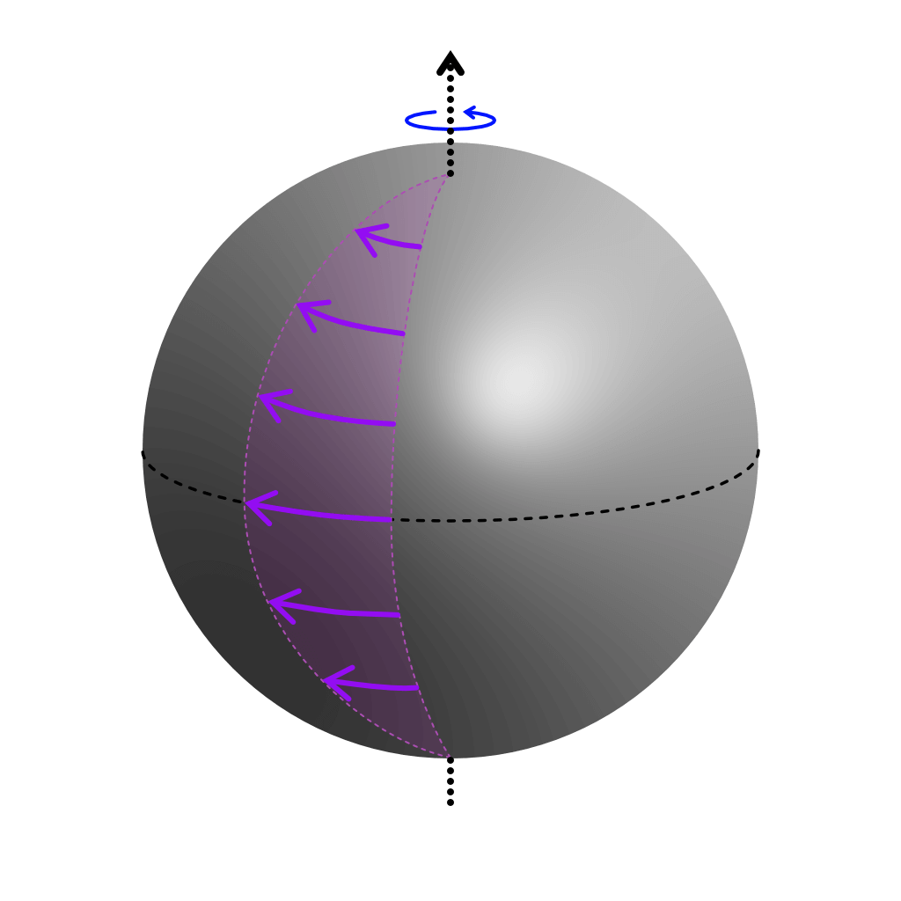
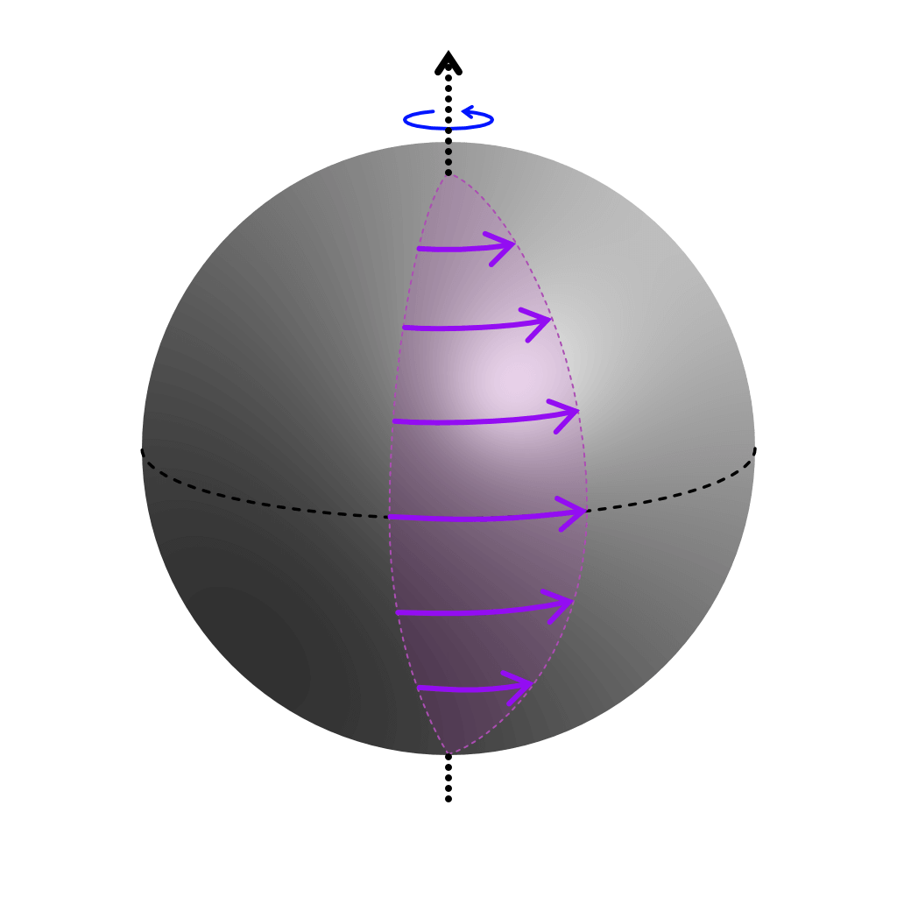
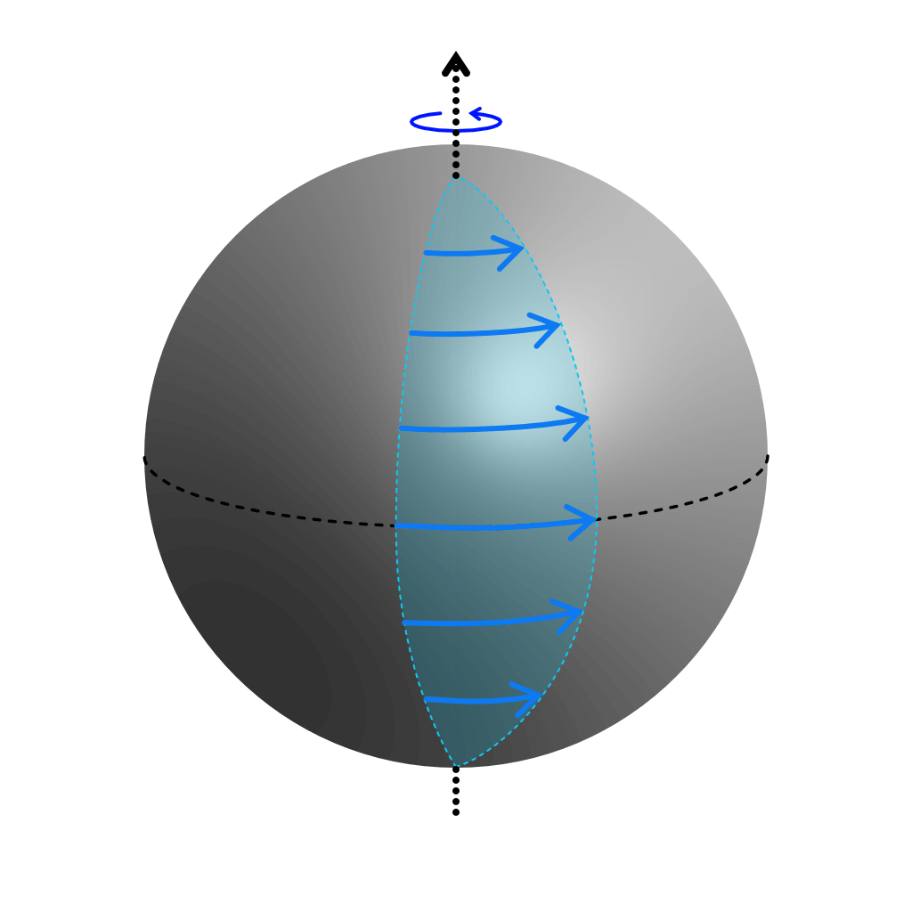

[MIS21-P01] 遅い磁気 Rossby 波と Alfvén 波の連続固有値を伴う回転球面上の 2 次元 理想 MHD 波動
JpGU 2022 [現地:
[MIS21-P01]
遅い磁気 Rossby 波と Alfvén 波の連続固有値を伴う
回転球面上の 2 次元 理想 MHD 波動
Two-dimensional ideal MHD waves over a rotating sphere
with continuous spectra of slow magnetic Rossby and Alfvén waves

中島 涼輔 (九州大学 大学院理学研究院)
吉田 茂生 (九州大学 大学院理学研究院 地球惑星科学部門)
＊esc キーを押すと overview モードになります (再度 esc キーで戻る)
＊スライド中の マークを hover すると詳細が表示されます
What are 2D MHD waves on a rotating sphere ?
- Consider a thin layer of a perfectly conducting fluid on a rotating sphere.
- The layer rotates almost rigidly with the sphere.
- A background toroidal magnetic field is maintained by other (long timescale) phenomena, such as the dynamo action.
Assume that it is expressed as $B_{0\phi}=B_0\sin\theta\cos\theta$ (equatorially-antisymmetric, $B_0$ is a constant). - Focus on linear waves in this basic state.
- This model can imitate a stably stratified layer in the outermost Earth's core (and the solar tachocline).
Do MHD waves in the stratified layer cause
some geomagnetic fluctuations ?
- Seismological surveys may have detected the stably stratified layer at the top of the Earth's core (e.g. Helffrich and Kaneshima, 2010).
- The existence and the origin of its stratification, which is significant in understanding the Earth's thermochemical history and core dynamics, remains inconclusive.
- Unclear properties of the layer may be able to be inferred from the identification of sources of wavelike geomagnetic variations.
- MHD waves within the layer may have been causing such variations (e.g. Buffett, 2014), whereas such a layer may be unnecessary to explain rapid geomagnetic changes (e.g. Gillet+, 2022). [Further research is needed.]
Preliminary knowledge (e.g. Zaqarashvili+, 2007)
magnetic field strength [abscissa]
| (fast magnetic) Rossby waves | inertia vs. planetary $\beta$ effect | kinetic energy dominant |
| Alfvén waves | inertia vs. Lorentz force | equipartition |
| slow magnetic Rossby waves | planetary $\beta$ effect vs. Lorentz force | magnetic energy dominant |
Malkus 磁場とは？
球内の MC (Magneto-Coriolis) 波.
背景磁場をうまく選ぶことで
球内の慣性波の問題 (e.g. Zhang+ (2001)) で
知られる Poincaré 固有値問題へと帰着させた.
ゆえに分散関係は, 磁場がないときの
球内の慣性波の固有振動数を用いて表現される.
磁場が強いと東西波数 1 で不安定.
円筒座標 $(s,\phi, z)$, 球座標 $(r, \theta, \phi)$ とすると
ここで, $B_0$ は定数, $R_0$ は球の半径, $\mu_\mathrm{m}$ は透磁率
磁場 $\bm{B}$ は東西方向, 電流 $\bm{J}$ は回転軸に平行で一様
球面 2D では $r=R_0$ より, $\bm{B}\,=\,B_0\sin\theta\hat{\bm{e}}_\phi$
以下では, 有界な関数 $\mathcal{B}(\cos\theta)$ を用いて
Malkus 磁場 ($\mathcal{B}=1$) との違いを $\bm{B}\,\equiv\,B_0\mathcal{B}\sin\theta\hat{\bm{e}}_\phi$ と表す
Purpose & Main conclusion
- Do MHD waves which can cause decadal and subdecadal geomagnetic variations can propagate in a thin layer on a rotating sphere with a somewhat more Earth’s core-like imposed magnetic field $B_{0\phi}=B_0\sin\theta\cos\theta$ (than the pure Malkus one $B_{0\phi}=B_0\sin\theta$) ?
- Discrete eigenmodes of slow magnetic Rossby waves, a candidate source of such fluctuations, disappear due to the action of magnetic shears in our model.
magnetic field strength [abscissa]
zonal wavenumber $m=1$
background field $B_{0\phi}=B_0\sin\theta\cos\theta$
Malkus 磁場の場合の「局所」Alfvén 波速度
Alfvén 波速度 $\bm{V}_\mathrm{A}=\pm(|B_0|/\sqrt{\rho_0\mu_\mathrm{m}})\sin\theta\hat{\bm{e}}_\phi$
 Coriolis 力が無視できるとき ($\zeta_1$ は摂動)
Alfvén 波速度の緯度依存性 ($\propto\sin\theta$) により, 全ての緯度で波の位相速度がそろう ($=$ 固有モード)
＊剛体回転の場合
慣性系の速度 $\bm{u}^{(\text{inertial})}=\varOmega_0 R_0\sin\theta\hat{\bm{e}}_\phi$ のとき, ラグランジュ微分は
非 Malkus 磁場では
Alfvén 波速度 $\bm{V}_\mathrm{A}=\pm(|B_0|/\sqrt{\rho_0\mu_\mathrm{m}})$$\mathcal{B}(\cos\theta)$$\sin\theta\hat{\bm{e}}_\phi$
Coriolis 力が無視でき
さらに, $|\bm{\nabla}_h a_1/a_1|\gg |(\ud\mathcal{B}/\ud\theta)/\mathcal{B}|$ と近似できるとき ($a_1$ も摂動)
初期に位相がそろっていたとしても
$\mathcal{B}$ の分だけ緯度ごとに位相速度が異なるので
時間とともに位相のずれは大きくなっていく
→ グローバルな固有モードにはならない
- Eigenvalue problem [ Numerical Results ]
- Use two linearized eqs. (vorticity eq. & uncurled induction eq.).
- Focus on normal modes (dependent variables $\propto \ue^{\ui(m\phi-\omega t)}$).
- Utilize the associated Legendre polynomial expansion in order to express the $\theta$ dependences of dependent variables.
- Solve the eigenvalue problem for a large sparse matrix (truncated degree $2000$).
- WKBJ approximation [ Discussion (1) ]
- Consider Earth's core-like environment (weak magnetic field, $\alpha=$ magnetic$/$rotation $\approx10^{-4}$ in the Earth's core).
- Focus on a wave packet with large wavenumbers $m\sim\uO(\alpha^{-1/2})$.
Small $\alpha$ reduces typical meridional wavelengths (see Numerical Results). - Integrate the ray-tracing equation (Track the path of a wave packet migrating with its group velocity).
「回転球面上 2 次元理想 MHD」の支配方程式
渦度方程式 (運動方程式の回転) と誘導方程式の uncurl
- $\bm{\nabla}_\mathrm{H}=(\bm{\hat{e}}_\theta/R_0)(\upartial/\upartial\theta)+(\bm{\hat{e}}_\phi/R_0\sin\theta)(\upartial/\upartial\phi)$
- $(\uD/\uD t)\equiv(\upartial/\upartial t)+\bm{u}\ip\bm{\nabla}_\mathrm{H}$
- $(\upartial \chi/\upartial r)=0$ とする
- 渦度
- $\zeta\equiv(R_0\sin\theta)^{-1}\left[(\upartial(u_\phi\sin\theta)/\upartial\theta)-(\upartial u_\theta/\upartial\phi)\right]=-\nabla_\mathrm{H}^2\psi$
- 電流
- $J\equiv\mu_\mathrm{m}^{-1}(R_0\sin\theta)^{-1}\left[(\upartial(B_\phi\sin\theta)/\upartial\theta)-(\upartial B_\theta/\upartial\phi)\right]=-\mu_\mathrm{m}^{-1}\nabla_\mathrm{H}^2A$
- 流線関数 $\psi$
- $u_\theta=(R_0\sin\theta)^{-1}(\upartial \psi/\upartial\phi)$, $u_\phi=-R_0^{-1}(\upartial \psi/\upartial\theta)$
- ベクトルポテンシャル $A$
- $B_\theta=(R_0\sin\theta)^{-1}(\upartial A/\upartial\phi)$, $B_\phi=-R_0^{-1}(\upartial A/\upartial\theta)$
線形化・Fourier 変換
基本場を $\bm{u}=\bm{0}$, $\bm{B}=B_{0\phi}(\theta)\hat{\bm{e}}_\phi=B_0\mathcal{B}\sin\theta\hat{\bm{e}}_\phi$ として線形化
波型の解を仮定 $\psi'(\mu,\phi,t)\equiv\mathrm{Re}[\tilde{\psi}(\mu)\ue^{\ui\varphi}]$ (位相 $\varphi\equiv m\phi-\omega t=m\phi - \lambda\tau$)
$\mu\equiv\cos\theta$, $\tau\equiv2\varOmega_0 t$, $\nabla_\mathrm{h}^2\equiv R_0^2\nabla_\mathrm{H}^2$
計算方法
本発表では, 具体的な背景磁場として $\mathcal{B}=\mu$ ($B_{0\phi}=B_0\sin\theta\cos\theta$) を採用
南北方向は Legendre 陪多項式で展開 ($N_\mathrm{t}$ は切断次数, 本発表では $2000$ に設定)
Legendre 陪多項式の直交性と漸化式を用いて, 行列の固有値問題の形にする
これを Python+NumPy (numpy.linalg.eig) で解く
Continuous modes appear, whereas Alfvén and slow magnetic Rossby discrete modes disappear.
magnetic field strength [abscissa]
zonal wavenumber $m=2$
background field $B_{0\phi}=B_0\sin\theta\cos\theta$


Prograde modes prefer the polar side, whereas retrograde modes prefer the equatorial side.
| $k>0$ | prograde continuous modes | $c_{\mathrm{g}\phi}>0$ |
| $k<0$ | retrograde continuous modes | $c_{\mathrm{g}\phi}<0$ |
| (fast magnetic) Rossby waves | $c_{\mathrm{g}\phi}\gtrless0$ |
- Suppose that continuous modes should be treated as propagating waves rather than normal modes.
- Prograde/retrograde modes approach their critical latitudes from the polar/equatorial side (cf. Numerical Results)
波線理論
波長が短い波がつくる波束がある地点で励起され, それが周囲に伝播する状況を考える
$\alpha$ が小さい場合 (地球外核の条件) に注目
波長 $\ll$ 背景磁場の空間スケールとし, 南北方向に WKBJ 解を仮定
さらに, $m/\sin\theta=\alpha^{-1/2}k(\theta)$, $\lambda=\alpha^{1/2}\lambda_1$ とスケーリングする ($l$, $k$, $\lambda_1$ は $\uO(\alpha^0)$)
臨界緯度に近づくと $l^{-1/2}\sim[\lambda_1^2-k^2\mathcal{B}^2\sin^2\theta]^{1/4}$ より $\psi_1\rightarrow\infty$
ray tracing 方程式
$\bm{x}$ は波束の位置 (無次元), $\ud_\mathrm{g}/\ud\tau=\upartial/\upartial\tau+\bm{c}_\mathrm{g}\ip\breve{\bm{\nabla}}_\mathrm{h}$ は群速度にのって見た時間微分
ある $(k\sin\theta,l,\lambda_1)$ をもつ波束は $\bm{c}_\mathrm{g}$で移動し
局所分散関係に従って南北方向の構造 ($l$) が変化
- $\breve{\bm{\nabla}}_\mathrm{h}\equiv\left((\sin\theta)^{-1}(\upartial/\upartial\phi), -(\upartial/\upartial\theta)\right)$
- 臨界緯度では $l\rightarrow\pm\infty$, $c_{\mathrm{g},-\theta}\rightarrow0$
- $l$ が実数であるためには
$-k\lambda_1\sin\theta/[\lambda_1^2-k^2\mathcal{B}^2\sin^2\theta] > k^2$ - $l=0$ のとき $c_{\mathrm{g},-\theta}=0$ で反射が起こりうる
- $\breve{\bm{\nabla}}_\mathrm{h}\varphi(\bm{x}, \tau)=\alpha^{-1/2}(k(\bm{x}, \tau), l(\bm{x}, \tau))$, $-(\upartial\varphi(\bm{x}, \tau)/\upartial\tau)=\lambda(\bm{x}, \tau, \bm{k}(\bm{x}, \tau))$ とすると
- $\frac{\upartial k}{\upartial\tau}=-\frac{\alpha^{1/2}}{\sin\theta}\frac{\upartial\lambda(\bm{x}, \tau, \bm{k}(\bm{x}, \tau))}{\upartial\phi}=-\frac{\alpha^{1/2}}{\sin\theta}\left[\left(\frac{\upartial\lambda}{\upartial k}\right)_{l,\phi}\frac{\upartial k}{\upartial\phi}+\left(\frac{\upartial\lambda}{\upartial l}\right)_{k,\phi}\frac{\upartial l}{\upartial\phi}+\left(\frac{\upartial\lambda}{\upartial \phi}\right)_{k,l}\right]=-(\sin\theta)^{-1}(\bm{c}_\mathrm{g}\ip\breve{\bm{\nabla}}_\mathrm{h})(k\sin\theta)-\frac{\alpha^{1/2}}{\sin\theta}\left(\frac{\upartial\lambda}{\upartial \phi}\right)_{k,l}$ などが成立
One should not imprudently drop the inertial effect (the geophysically traditional magnetostrophic approx.) in the system having magnetic shears.
This approximation influences the existence of the critical latitudes, making the eigenmodes different from the original.
- Conclusion
- Critical latitudes (due to the Alfvén resonance) rule out Alfvén and slow magnetic Rossby discrete modes and allow singular continuous modes to appear. [Nakashima & Yoshida part.1 (in prep.)]
- Wave packets belonging to prograde continuous modes approach their critical latitudes from the polar side, while retrograde ones approach the latitudes from the equatorial side. [Nakashima & Yoshida part.1 (in prep.)]
- One should not carelessly ignore the inertial effect in the system possessing magnetic shears. [Nakashima & Yoshida part.2 (in prep.)]
- Future work
- Our model may have omitted additional effects which can retain slow magnetic Rossby discrete modes.
- magnetic diffusion [later papers]
- shallow water model [later papers]
- poloidal background field
- horizontal component of the Earth's angular velocity ( valve effect)
- Understanding of fundamental processes
- phase mixing, Landau damping, quasi-mode
- pseudomomentum [part.2 paper], wave–mean field interaction
- Reference & Details
see Confit site